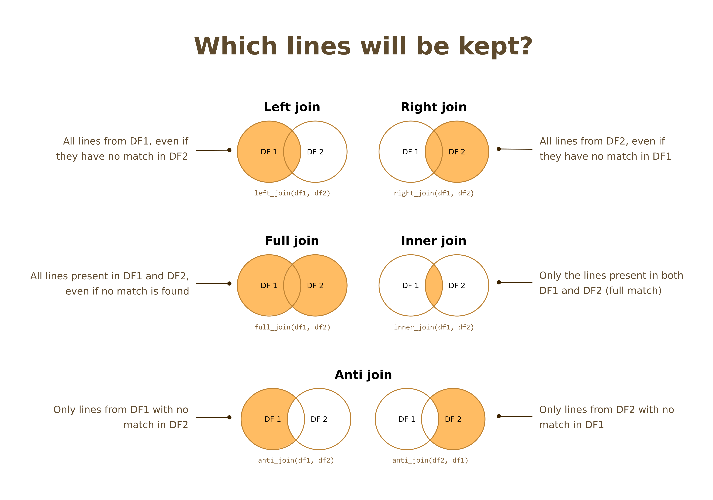

Mutating joins: add new variables to a dataframe
Left join: keep all rows from the first dataframe, and import lines with a correspondence from the second dataframe.
Right join: keep all rows from the second dataframe, and import lines with a correspondence from the first dataframe.
Full join: combine two full dataframes, keeps all rows.
Inner join: take the intersection of two dataframes, keeps only rows present in both dataframes
Filtering joins: filter a dataframe based on another one
Anti join: keep all lines from first dataframe without matches in the second dataframe
semi join: keep all lines from first dataframe with matches in the second dataframe

Tidyverse site presentation of mutating joins and filtering joins: some explanations + exemples
Tydiverse reference page on mutating joins: here you will find the full list of arguments for the joins functions
Epirhandbook page on joins
First we will use small and clean dataframes to understand which function to use and how, and in later steps we will try our hands on linelist data.
Consider these two mini dataframes containing patient data and lab results for patients.
| ID | sexe | age | age_unit |
|---|---|---|---|
| patient_1 | F | 5 | Year |
| patient_2 | M | 10 | Year |
| patient_3 | M | 2 | Year |
| patient_4 | F | 15 | Year |
| patient_10 | F | 14 | Year |
| ID | test_result |
|---|---|
| patient_1 | positive |
| patient_2 | negative |
| patient_4 | negative |
| patient_5 | positive |
| patient_6 | positive |
Which join would you use to…
The syntax of the join functions is always the same:
XXX_join(dataframe1, # "left" dataframe
dataframe2, # "right" dataframe
by = c("identifier1", "identifier2")) # Columns used to match the two dataframes
# Or, with a pipe:
dataframe1 %>% # "left" dataframe
XXX_join(dataframe2, # "right" dataframe
by = c("identifier1", "identifier2")) # Columns used to match the two dataframesHow would you perform a left join of df_patient
with df_lab (where df_patient is used as
reference/baseline)?
Because we want `df_patient` as the baseline, it should be listed first.df_patient %>%
left_join(df_lab, by = "ID")Write the command that returns all lines from the lab database for which we are missing age and sex.
Because we want `df_lab` as the baseline, it should be listed first.df_lab %>%
anti_join(df_patient, by = "ID")When one dataframe has several lines for some of the patients, duplications may occur (depending on the join).
Let us consider these small dataframes:
| ID | sexe |
|---|---|
| patient_1 | F |
| patient_2 | M |
| patient_3 | M |
| ID | date_test | test_result |
|---|---|---|
| patient_1 | 2021-12-01 | positive |
| patient_1 | 2021-12-26 | negative |
| patient_1 | 2022-01-05 | negative |
| patient_2 | 2021-12-18 | positive |
| patient_4 | 2022-01-01 | positive |
How would you count the number of lines for each patient?
Try it for the df2 dataframe:
There are several ways, but a very quick way is to use the ``count` function.count(df2, ID)And if we do this for the df1 dataframe:
So we see that in the lab dataframes, some patients have several lines (they were tested more than once). This will affect our joins.
Now we will try to use these functions with linelist data. We will first guide you through joining of a subset of the linelist data with a subset of hospital patient data.
| case_id | hospital | age_years | wt_kg | ht_cm | date_onset | admin3pcod |
|---|---|---|---|---|---|---|
| 86340d | Port Hospital | 1 | 18 | 29 | 2014-10-30 | SL040102 |
| 92d002 | NA | 16 | 59 | 133 | 2014-08-16 | SL040102 |
| 544bd1 | NA | 10 | 39 | 106 | 2014-08-29 | SL040204 |
| 6056ba | NA | 0 | NA | 24 | 2014-10-20 | SL040208 |
| eb5aeb | Port Hospital | 8 | 34 | 104 | 2014-10-28 | SL040208 |
| e64e04 | NA | 7 | 32 | 91 | 2014-10-06 | SL040102 |
| 5a65bb | Port Hospital | 4 | 41 | 74 | 2014-09-21 | SL040102 |
| 2ae019 | Other | 37 | 81 | 167 | 2014-05-06 | SL040208 |
| 7ca4c0 | Port Hospital | 11 | 56 | 163 | 2014-09-29 | SL040208 |
| 699d82 | Port Hospital | 27 | 76 | 178 | 2014-11-27 | SL040102 |
| hospital | id_case | hospitalisation_date | outcome | outcome_date |
|---|---|---|---|---|
| Port Hospital | 86340d | 2014-10-31 | Recover | 2014-11-15 |
| Port Hospital | eb5aeb | 2014-11-01 | Recover | NA |
| Port Hospital | 5a65bb | 2014-09-22 | Recover | NA |
| Port Hospital | 7ca4c0 | 2014-09-30 | 2014-10-08 | |
| Port Hospital | 699d82 | 2014-11-28 | Death | 2014-12-05 |
| Port Hospital | 30af4f | 2014-11-10 | Death | 2014-11-14 |
| Port Hospital | f8cd8f | 2014-10-19 | Death | 2014-10-25 |
| Port Hospital | 212254 | 2014-08-31 | Death | 2014-09-06 |
| Port Hospital | cb8f4e | 2014-10-29 | Death | 2014-11-05 |
| Port Hospital | 890de4 | 2014-08-21 | 2014-08-23 |
Fill in the blank to check the dimensions (number of lines and columns) of the two dataframe.
____(linelist)
____(hospitals)dim(linelist)
dim(hospitals)The first question to ask is which column should be used for the matching.
Before joining, it is extremely important to consider whether the
column(s) used to match the two dataframes are clean. The
join functions from dplyr are using
exact matching: the values need to be exactly the same
in both dataframes to be matched.
Note: There are packages that perform probabilistic (“fuzzy”) matching, but we will not see them today (refer to the chapter on joining in the epirhandbook).
In our case, do we know if patient ID were entered in the same way in both dataframe? If data comes from a clean SQL database and is a primary key, probably. With excel data entered by many different people in emergency settings, maybe not. In general, it is a good rule to scrutinize the columns you want to use as identifer/keys to join your dataframes.
Spend a bit of time looking at the structure of ID. Do they follow the same pattern? Are some ID common between the two databases?
Let’s look at a sample of IDs from both dataframes:
linelist %>% arrange(case_id) %>% pull(case_id) %>% head(10)## [1] "00612b" "008ea7" "00c3c7" "00da2b" "012ea3" "013ff1" "017b46" "0197b6"
## [9] "01b1fd" "01dad0"hospitals %>% arrange(id_case) %>% pull(id_case) %>% head(10)## [1] "008ea7" "00c3c7" "0197b6" "050eca" "0563d7" "059b73" "062638" "098ddf"
## [9] "09f73e" "0afd15"They seem similar. Is there IDs in common between the two dataframes?
The intersect() function let you know which elements are in
common between two vectors.
intersect(linelist$case_id,
hospitals$id_case) %>% head(10)## [1] "86340d" "eb5aeb" "5a65bb" "7ca4c0" "699d82" "30af4f" "dc1730" "f8cd8f"
## [9] "7bb784" "6f8014"There are definitely IDs in common.
With very dirty data, you would want to inspect your IDs more, especially the ones who don’t match, in case several patterns of IDs were used within the same file.
Now, it would be good to understand better who are the patients in which dataframes. Are there duplicated lines?
Show the IDs from the linelist dataframe with more than one row per patient:
linelist %>% There are several ways, but a very quick way is to use the `count()` function.To only keep lines with that satisfy a condition in one or several columns you can use the `filter()` function. linelist %>%
count(case_id) %>%
filter(n > 1)Now, do the same for the hospital dataframe:
So we know that there some patients have several rows in the linelist file. Ideally we would go and investigate these duplicates to see if they correspond to different visits, or if some patients were wrongly entered twice, but since our focus is on joining, let’s keep them all for now.
Now, to understand how the two datasets relate to each other, you can
perform an anti_join() in both directions.
# Perform an anti-join to see the rows from the linelist dataframe that have no match in the hospitals dataframeanti_join(df1, df2, by = "ID")anti_join(linelist, hospitals, by = c("case_id" = "id_case"))Now in the other direction:
# Perform an anti-join to see the rows from the hospital dataframe that have no match in the linelist dataframeanti_join(df1, df2, by = "ID")anti_join(hospitals, linelist, by = c("id_case" = "case_id"))So we see that the linelist dataframe has many patients
that are not in the hospitals dataframe, and that the
hospitals dataframe is mostly a subset of the linelist
patients (except for three rows).
Now, we feel safe in joining the linelist to the
hospitals data. Perform a full join of both
datasets.
# Perform a full join of hospitals unto linelistfull_join(linelist, hospitals, by = c("case_id" = "id_case"))Now let’s check the size of the output:
## [1] 670 11We can see that the output dataset is slightly longer than the
original linelist dataset, which is normal since a couple
of rows from the hospitals dataframe had no matches in the
linelist dataframe.
We now want to add administrative data to patient data in the
linelist, using the geo_data dataframe. Here is the ten
first lines of this new dataframe:
| ADM0_EN | ADM0_PCODE | ADM1_EN | ADM1_PCODE | ADM2_EN | ADM2_PCODE | ADM3_EN | ADM3_PCODE |
|---|---|---|---|---|---|---|---|
| Sierra Leone | SL | Southern | SL03 | Bo | SL0301 | Badjia | SL030101 |
| Sierra Leone | SL | Southern | SL03 | Bo | SL0301 | Bagbo | SL030102 |
| Sierra Leone | SL | Southern | SL03 | Bo | SL0301 | Bagbwe(Bagbe) | SL030103 |
| Sierra Leone | SL | Southern | SL03 | Bo | SL0301 | Bo Town | SL030191 |
| Sierra Leone | SL | Southern | SL03 | Bo | SL0301 | Boama | SL030104 |
| Sierra Leone | SL | Southern | SL03 | Bo | SL0301 | Bumpe Ngao | SL030105 |
| Sierra Leone | SL | Southern | SL03 | Bo | SL0301 | Gbo | SL030106 |
| Sierra Leone | SL | Southern | SL03 | Bo | SL0301 | Jaiama Bongor | SL030107 |
| Sierra Leone | SL | Southern | SL03 | Bo | SL0301 | Kakua | SL030108 |
| Sierra Leone | SL | Southern | SL03 | Bo | SL0301 | Komboya | SL030109 |
Exercice: add administrative data to each patient of the linelist.
# Add administrative data to each patient of the linelist.Unsure of what to do? Which sort of join would fit most the wording of the question?Have you picked one or several identifier columns? Do they have the same name in both datasets? Inspect the content of the columns, will the match work?Have you picked one or several identifier columns? Do they have the same name in both datasets? Inspect the content of the columns, will the match work?# Solution
left_join(linelist, geo_data, by = c("admin3pcod" = "ADM3_PCODE"))What happen when the identifiers columns are dirty?
Well, it depends on how many different values there are, and how much they differ between the two datasets. Sometimes you may be able to clean one of the columns by hand quickly. If that is not a viable solution, you can try probabilistic/fuzzy matching with packages such as fastLink or fuzzyjoin.
Here you want to add some hospital data to the linelist
dataframe. Here is what the dataframe looks like:
| hosp_name | catchment_pop | level |
|---|---|---|
| central hospital | 1950280 | Tertiary |
| military | 40500 | Secondary |
| military | 10000 | Primary |
| port | 50280 | Secondary |
| St. Mark’s | 12000 | Secondary |
| ignace | 5000 | Primary |
| sisters | 4200 | Primary |
Now, join the hospital data to the linelist data.
You can use the `unique()` or `distinct()` functions to identify differences in the columns to matchHow can you clean the hospital_dirty hospital names?You can use such functions as `replace()` and `case_when()` to rename values within a column using `mutate()`.Sometimes it can easiest to convert a column to all lowercase or all uppercase. If you need to convert all values in a column to UPPER or lower case, use `mutate()` and wrap the column with one of these functions from stringr such as `str_to_upper()`, `str_to_lower()`, `str_to_title()`.left_join(linelist, hospital_clean, by = c("hospital" = "hosp_name"))